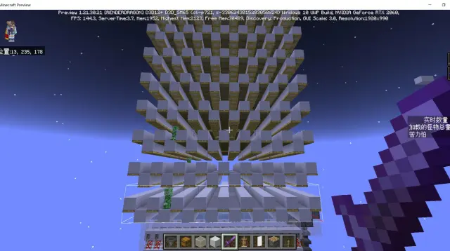
由于基岩版1.21以后生物生成从方块的西北角挪到了方块的中心，所以苦力怕刷怪塔做成寻路式的会更加简单可靠高效。
因为国内没有人总结过相关的机制，因此本文将会阐述一些BE寻路相关的机制和原理，由于缺乏代码验证，本文相关内容可能有所纰漏，请见谅。
苦力怕刷怪塔一直是生存最常见的刷怪塔之一。
但由于基岩版的生物生成位置从角落挪到了方块的中心，因此苦力怕就不能同时满足活板门限位、水流冲刷和存在空气源这三个条件，因此传统的水流式苦力怕在1.21版本以后不复存在。
那么，我们就需要参考一下Java版的科技树了。
我们都知道，刷怪塔的核心要点就是如何迫使怪物移动，将刷怪平台的怪物以某种方法聚在一起。在Java版中，常见的刷怪塔原理大致分为三类：
在Java版中，由于生物没有基岩版的9*9区块的种群密度控制，怪物能以非常高的密度聚集在一起，因此水流时钟成本低廉且处理速度够快。但是在基岩版中，由于怪物刷新速度太慢，而且怪物密度比较低，在mojang不移除种群密度检测这个远古机制以前，我们造水流时钟式刷怪塔得不偿失。
在Java版中，苦力怕躲避猫的速度远远快于其寻找完整方块的速度，因此在Java版中简单的苦力怕刷怪塔经常会用到大量的猫。
但是在基岩版中，苦力怕躲避猫的速度没有其寻找完整方块的速度快，且苦力怕躲避猫的范围只有6格（欧式距离），这比寻路的范围小多了，因此基岩版刷怪塔用寻路机制更为合理。
在基岩版中，怪物在其感受到不安全的方块上，如台阶、冰等方块上时，会寻找安全的方块，如石头、木板等。
其搜索范围以其脚部为中心，范围为21*17*21（切比雪夫距离），即寻找横向10格，纵向8格的范围内有无安全完整的方块。
超过此距离苦力怕也有非常低的概率寻路，但是速度极其缓慢，可忽略不计。
我们先在每个冰方块上放置苦力怕刷怪蛋，然后观察情况：
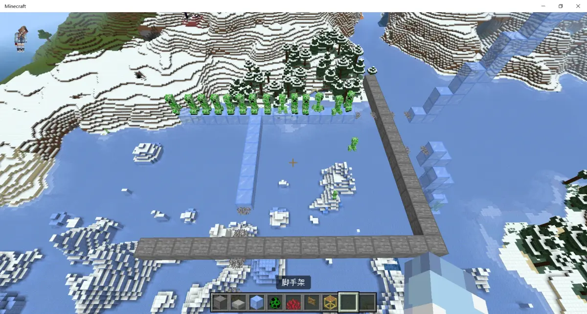
一段时间内，横向10格范围内有完整方块的苦力怕都走到珊瑚扇上掉了下去。
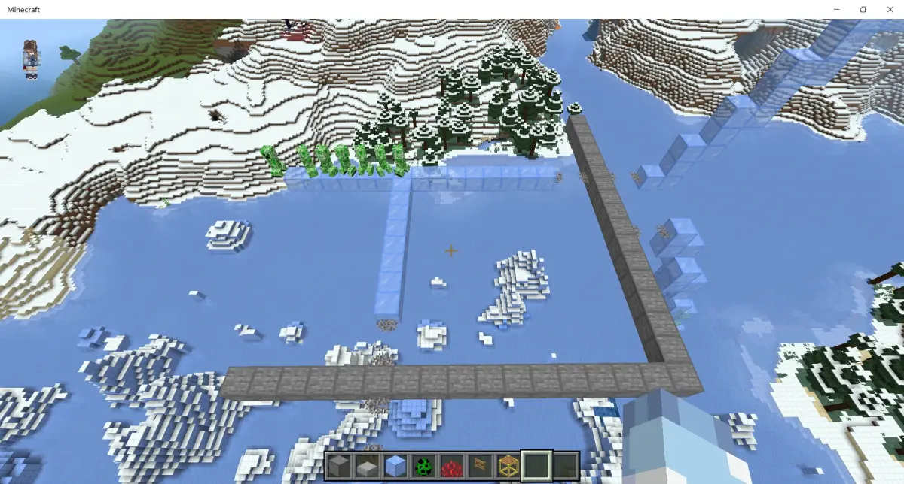
纵向8格范围内有完整安全方块的苦力怕也会进行寻路：
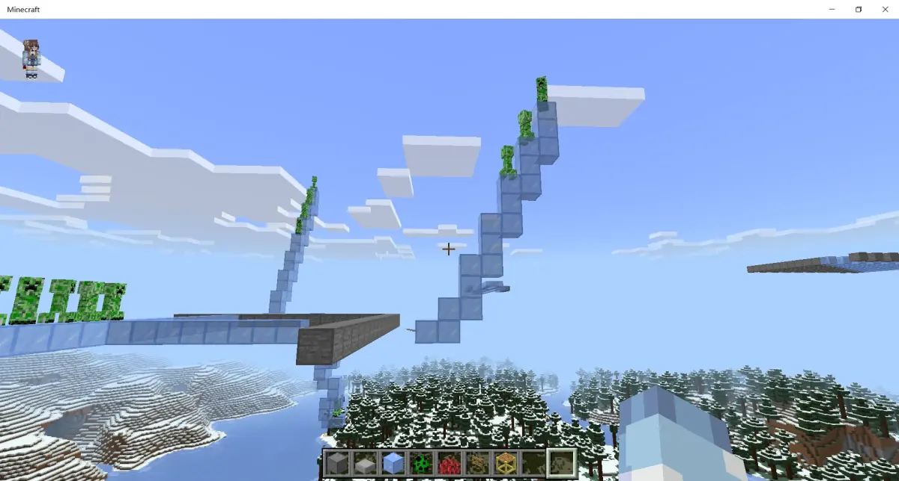
可以观察到此范围以苦力怕的脚部一格为中心：
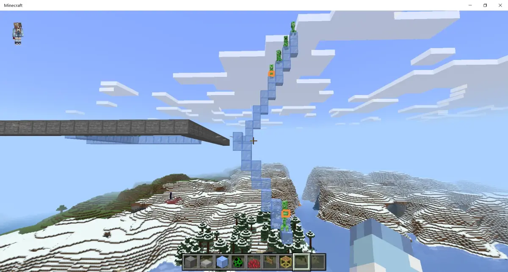
在找到安全方块以后，生物会寻找一条路径以尽可能抵达安全方块上方。如果没有合适的路径，生物则会寻找距离其最近的地方。
如图，我们放置了一些苦力怕：
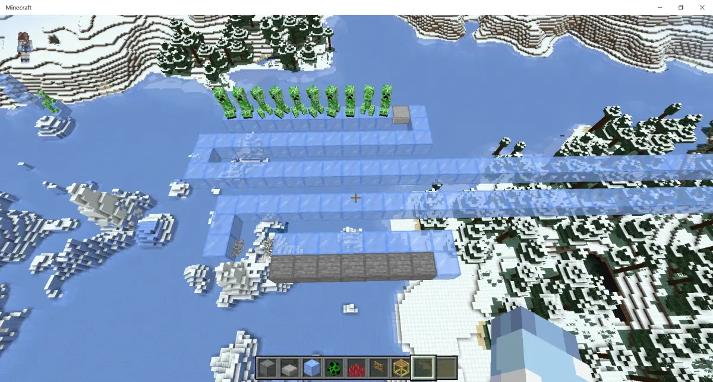
而苦力怕并没有成功抵达安全方块上方，这就是因为寻路路径超出了其寻路范围导致的，这时苦力怕会抵达其寻路范围内距离安全方块最近的地方：
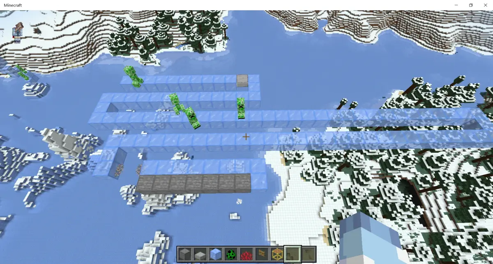
上图一部分苦力怕被其他苦力怕挤下去了（
那如果我们在寻路路径上使用其他障碍呢？
如图，基岩版的苦力怕从冰上出发，为了走到完整方块上居然会跨过水流！这在Java版显然是行不通的，但是在基岩版却可以。
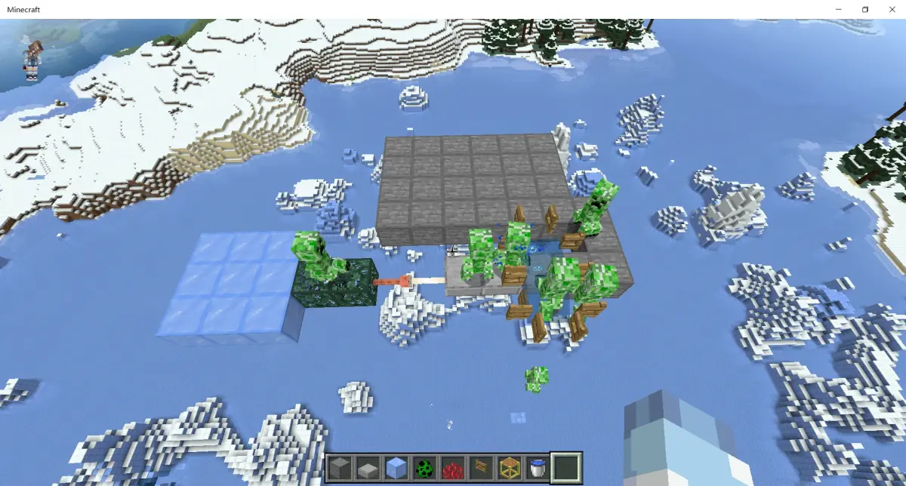
除了水流这种会迫使生物移动的方块外，有一些方块并没有完整的碰撞箱，如珊瑚扇或活板门，但是苦力怕依旧会在寻路过程中直接踩过去这些方块，因此珊瑚扇或活板门非常适合用来制作聚怪陷阱。
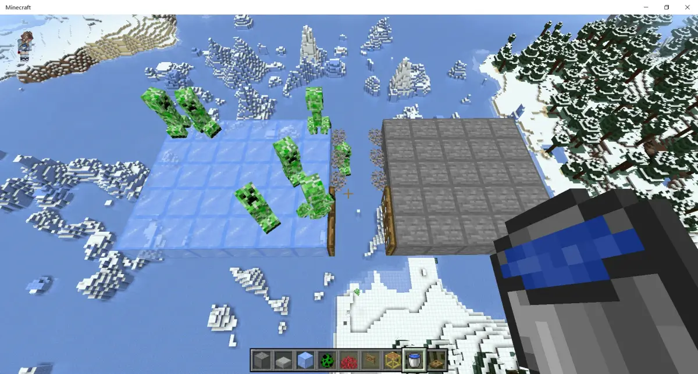
那么我们来介绍一些利用寻路机制的刷怪塔案例吧。
如图，黑色方块为上层台阶，可以刷怪，白色石英台阶用于限制蜘蛛生成，活板门用于控制苦力怕生成。
苦力怕生成后会寻路到十字形的白色混凝土上，但因为混凝土上方的水流而被冲刷到中心。
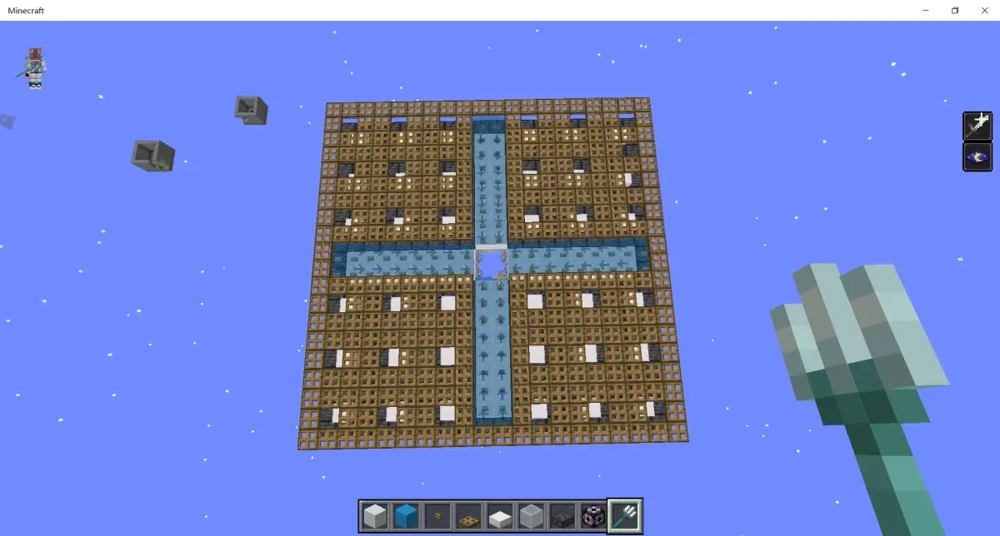
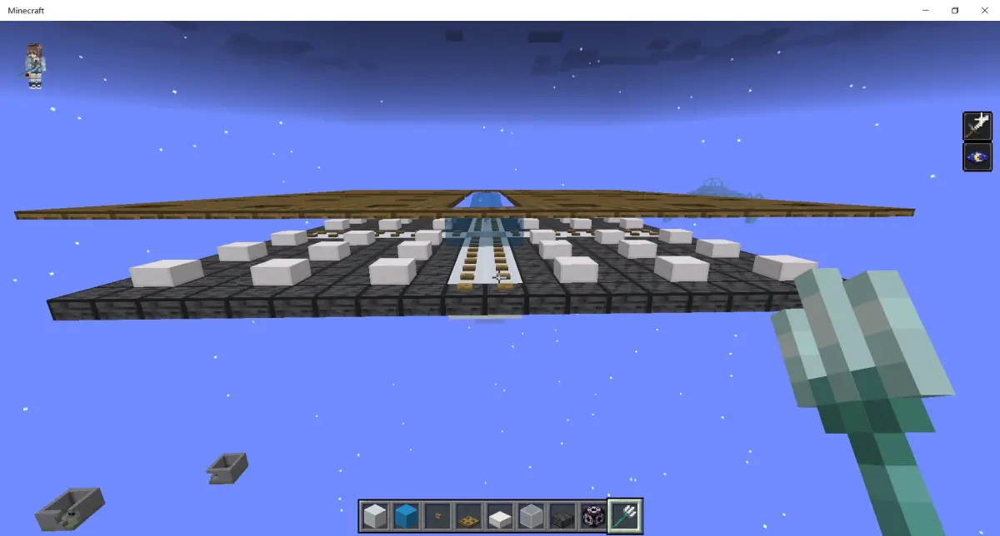
本结构由国外大佬@mikehomer制作并在油管发布
如图，中间的活板门由于限制蜘蛛生成，周围抬高一格围绕三圈土径，土径被生物认为是安全方块，但土径上方不会生成生物。
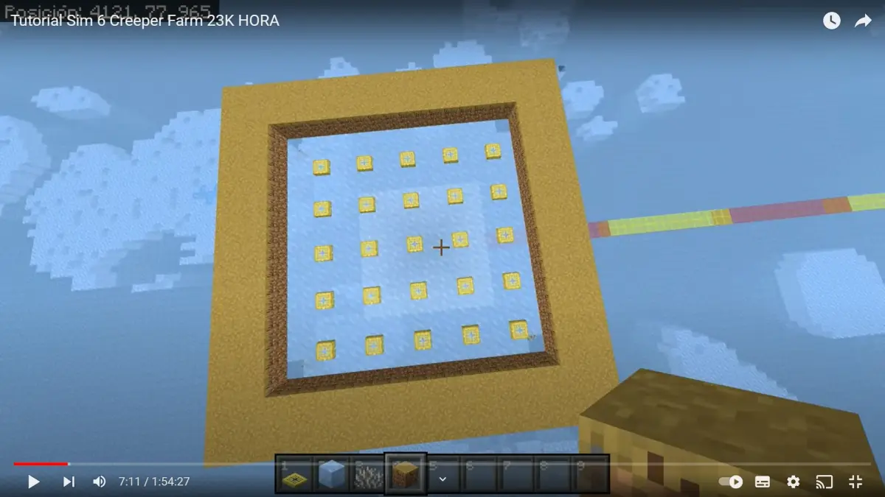
在四个角落，使用珊瑚扇骗寻路，苦力怕即可通过角落试图走到土径上，然后用活板门限制苦力怕的运动。
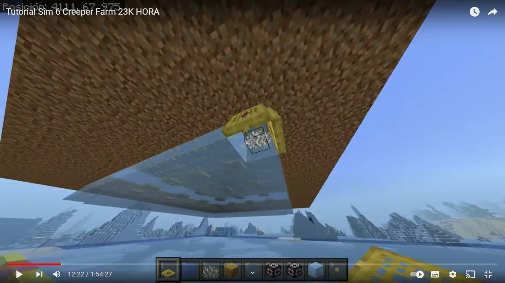
本设计由B站大佬@积雨云awa 设计完成。
如图，由于1.21生成位置改变，苦力怕可以在交错的完整方块上生成。下层交错的完整方块恰好阻碍了蜘蛛的生成，而上层的活板门也阻碍了蜘蛛的生成。
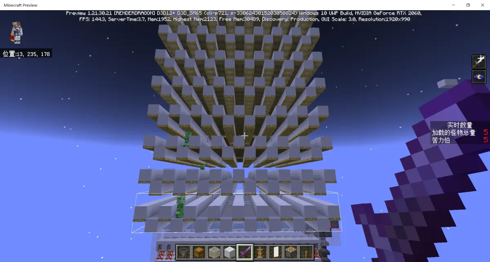
在完整方块上的生物会随机寻路。
在基岩版中，怪物是先找到一个点再去寻找走到其位置的路径。那么，我们隔层放珊瑚扇即可使生物以非常快的速度寻路到其他层，以骗取生物坠落。
千万要注意，这里的珊瑚扇是隔层放置的。
橙色为起点，紫色为终点，红色为寻路路径，青色为坠落地点：
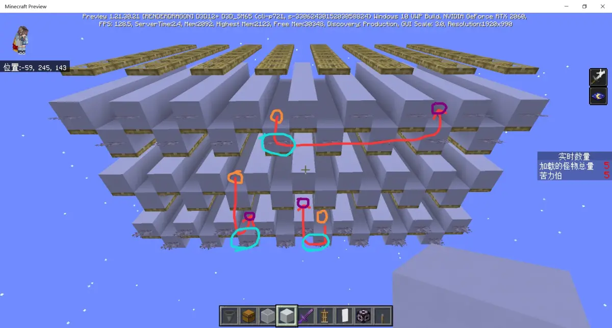
怪物摔落后，利用水流缓冲，再利用矿车+激活铁轨即可迅速将怪物聚集到搅拌机内。这是目前最好的刷怪塔之一。
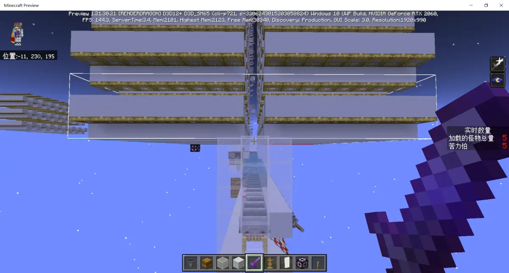
寻路式刷怪塔一直有非常高的拓展性，但是长期缺乏相应的设计和机制总结。希望本期图文专栏可以为后来者提供一些帮助，目前的设计远未抵达尽头，还需要各位加油努力呀。
参考资料：